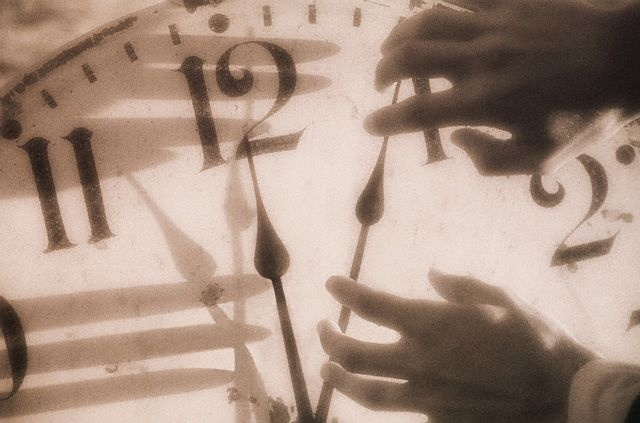

The question
What remains of the everyday moments that shape us?

A video poem exploring memory, time, and the fragments of everyday life that shape who we become.
What remains of the everyday moments that shape us?
A video poem brings image, time, and sound into conversation.
An exploration of memory through fragments of everyday life.
Remnant is a video poem that reflects on the way humans experience time. It explores memory, emotion, and the moments that shape us, suggesting that time is both a human construct and a force beyond our control. Through fragments of everyday life, it reveals how we become remnants of what we remember.